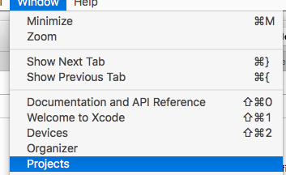
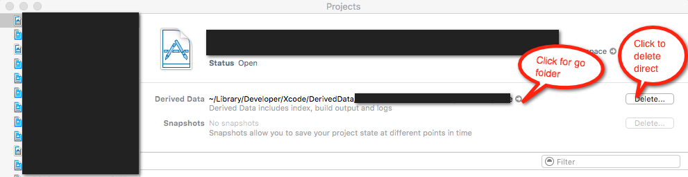
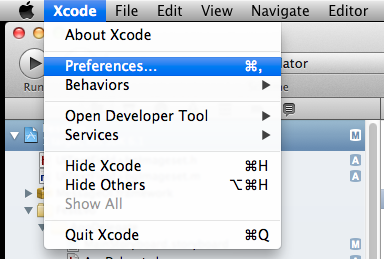
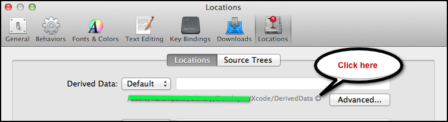

Can I safely delete contents of Xcode Derived data folder?
I am running low on disk space and checked through a third party utility that among other things that ~/Library/Developer/Xcode/DerivedData directory is taking about 22GB of disk space.
I searched stackoverflow and found this post
How can I safely delete in my ~/Library/Developer/Xcode/DerivedData directory?
The accepted answer to this question suggests that I should not touch / remove folders from this directory. so what I did was
- Found an existing build project folder for an app that I have available on Appstore
- Deleted the folder from derived dir
- launched XCode 5
- Open that project
- Clean Build
- Tested and compiled it on a simulator
- ReArchived
- Everything worked. Nothing was broken.
Unless I missed something in that posts answer I want to make sure by asking experienced developers that if I delete all the folders from DerivedData it will not hurt me in building, testing and compiling those projects.
Answer
Yes, you can delete all files from DerivedData sub-folder (Not DerivedData
Folder) directly.
That will not affect your project work. Contents of DerivedData folder is
generated during the build time and you can delete them if you want. It's not
an issue.
The contents of DerivedData will be recreated when you build your projects
again.
Xcode8+ Update
From the Xcode8 that removed project option from the window tab so you can still use first way:
Xcode -> Preferences -> location -> click on small arrow button as i explain in my first answer.
Xcode7.3 Update For remove particular project's DeriveData you just need to follow the following steps:
Go to Window -> Project:

You can find the list of project and you can either go the DerivedData
Folder or you can direct delete individual Project's DerivedData

I am not working on Xcode5 but in 4.6.3 you can find DerivedData folder as
found in the below image:

After clicking on Preferences..

You get this window

Suggest
I purge derivedData often enough that I have an alias for it. It can fix build problems. I have the following in /Users/Myusername/.bash_profile
alias purgeallbuilds='rm -rf ~/Library/Developer/Xcode/DerivedData/*'
Then in terminal, I type purgeallbuilds, and all subfolders of DerivedData are deleted.